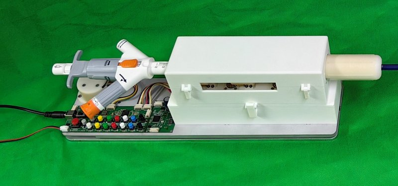

Academic bedside robots · casiattvr_lin2024
CASIA TTVR robot
CASIA robotic transcatheter tricuspid valve replacement (TTVR) system

1 / 5


- Family
- Academic bedside robots (academic)
- Devices
- large-bore steerable TTVR delivery catheter (detachable) with valve Delivery system: LuX-Valve Plus (Jenscare Biotechnology, Ningbo) (lin2025 Sec. II).
- Degrees of freedom
- 5 (overall forward/backward along the long axis, catheter rotation, outer-sheath advance/retract, bending of the bending tube, inner-core advance/retract; lin2025 Sec. II, Fig. 1(b)); 2 controlled (overall translation and bending; lin2025 Sec. III; lin2026_robotic Experimental setup)
- Push
- Other drives
- Twist
- Handle or knob
- Tested up to
- Animal
- Sim-to-real
- Unclear — Learning or simulation is reported but where it was trained is not stated.
Testing
- Highest level
- Animal
- What was tested
- first-in-vivo animal study (species and number N.R. in the arXiv abstract; full text not read); 15 patient CT datasets + 3 cardiac phantoms with mm-scale tip tracking error (lin2026_autonomous abstract); 10 operators raw vs augmented virtual fluoroscopy and 10 closed-loop control trials on the virtual-physical platform (lin2026_robotic) lin2025: printed patient-CT heart phantom (SVC, RA, RV); 3 catheters x 3 random start positions and 3 camera poses x 3 runs (Sec. IV-A, IV-C, Tables I-II); still phantom level.
- Key numbers
- co-piloted control better than master-slave in time efficiency, control efficiency, autonomy and stability (numbers N.R. in abstract); platform: tracking-to-CT registration 0.59 +/- 0.16 mm, landmark projection 2.31 +/- 0.60 px, input-to-display latency 255.6 +/- 13.4 ms, 2D angular error 15.02 -> 2.57 deg (median) with augmented fluoroscopy across 10 operators (lin2026_robotic Tables 1-2) lin2025 DeePC: "In most cases, the final error in slope is less than 1 deg and the error in intercept is under 3 pixels" for the tip line in the camera image (Sec. IV-C); worst case 2.55 +/- 0.04 deg and 3.37 +/- 0.17 px (camera pose 3, position 2, Table II); no success rate or time reported.
Mechanism
- Push (translation)
- other: robotic drive of the delivery-catheter system; overall translation by its own motor, drawn as a pinion on a toothed rack in lin2025 Fig. 1(b) (the text does not describe the mechanism)
- Twist (rotation)
- four motors in the drive unit, coupled through isolation parts to the instrument case that holds the delivery system (rotation, outer sheath, bending, inner core); "The power from the Drive Unit is transmitted to the catheter through the Isolation Parts without direct physical contact" (lin2025 Sec. II, Fig. 1(b))
- Device range
- workspace drawn in lin2025 Fig. 1(c): overall translation -28 to 212 mm, rotation -180 to 180 deg, outer sheath -107 to 20 mm, bending -90 to 0 deg, inner core -20 to 20 mm (graphic only, not in the text)
- Target anatomy
- right heart: tricuspid valve (transcatheter tricuspid valve replacement / intervention)
Sensing and interface
- Force sensing
- N.R.
- Leader and haptics
- leader side with operator interface and GUI (lin2026_robotic Fig. 2b); haptics N.R.
- Imaging
- fluoroscopy (virtual fluoroscopy in the platform, 32 deg RAO / 7 deg CAU); optical shape/pose tracking of the catheter lin2025: a 640 x 480 px, 30 fps camera over the phantom stands in for fluoroscopy (Sec. IV-A).
- Sterility
- components above the isolation parts can be sterilised during surgery (lin2025 Sec. II: "the ability to sterilize the components above the Isolation Parts during surgery, while maintaining a sterile environment for the catheter")
Size
- Footprint (mm)
- N.R.
- Mass (kg)
- N.R.
Simulation
- Simulation model
- virtual-physical simulator: real robot-driven catheter, optical shape tracking, CT-derived virtual fluoroscopy in 3D Slicer 5.10 (lin2026_robotic)
- Sim-trained controller
- RL is part of the 2024 system (wang2024_robotic abstract); where it was trained is N.R. (arXiv PDF not read). lin2025_modelfree (full): DeePC uses a Hankel matrix of the operator's recorded master-slave motion and "does not require additional calibration or model training" (Sec. III-A, V); no simulator.
Versions
- Lineage
- 2024 TTVR system: passive stabilizer, robotic drive, detachable delivery catheter, valve manipulation mechanism; RL + Monte Carlo probabilistic maps + human-robot co-piloted control (wang2024_robotic, arXiv abstract); 2025 model-free delivery with Data-Enabled Predictive Control (DeePC) on the same drive and the LuX-Valve Plus delivery system, a camera standing in for fluoroscopy over a printed heart phantom (lin2025_modelfree, full); 2026 patient-specific geometry-aware planning + numerical-Jacobian IK control (lin2026_autonomous, abstract); 2026 virtual-physical simulation platform (lin2026_robotic, full)
Sources
- Robotic transcatheter tricuspid valve replacement with hybrid enhanced intelligence: a new paradigm and first-in-vivo study · arXiv, 2024 · doi:10.48550/ARXIV.2411.12478 [wang2024_robotic]
- Model-Free Catheter Delivery Strategy for Robotic Transcatheter Tricuspid Valve Replacement · 2025 IEEE/RSJ International Conference on Intelligent Robots and Systems (IROS), 2025 · doi:10.1109/iros60139.2025.11247226 [lin2025_modelfree]
- Autonomous Patient-Specific Geometry-Aware Planning and Control Framework for Robotic Transcatheter Tricuspid Valve Intervention · IEEE Transactions on Biomedical Engineering, 2026 · doi:10.1109/tbme.2026.3725663 [lin2026_autonomous]
- A robotic simulation platform for fluoroscopy-guided catheter navigation in transcatheter tricuspid valve intervention: system development and proof-of-concept applications · Journal of Robotic Surgery, 2026 · doi:10.1007/s11701-026-03852-1 [lin2026_robotic]
Notes
- Notes
- Structural-heart catheter robot, not a guidewire/neuro robot; include or move to a structural-heart box.
This record
- Read level
- full — full (lin2026_robotic); abstract (wang2024_robotic, lin2026_autonomous); full (lin2025_modelfree, 2026-10-14)
- Picture
- lin2026_autonomous Fig. 6(a) (experimental set-up, p. 9), IEEE TBME 2026, ↗ — licence: publisher copyright (IEEE); grade A
- Picture changes
- native extract: the photo is embedded as three 3302 px raster strips (p9_9, p9_7, p9_12; the labels and arrows are vector text, not in the raster); stitched without overlap to 3302 x 689; cropped to the robot (left 44.5 %, phantom and holders cut); nothing erased; none upscaled
- Found by
- gap: Gap searches for robots the other searches missed.
- Data
- JSON · YAML:
records/robots/casiattvr_lin2024.yaml - Correction
- Suggest a correction [repository not created yet]